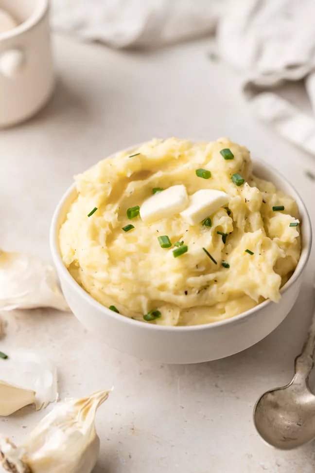

Mashed Potato

Ingrediants
- 5 pounds Yukon Gold potatoes
- ½ cup butter
- 2 cups Parmesan cheese
- 1 cup chopped fresh chives
- 1 ½ cups cream cheese
- ½ medium head garlic, peeled and minced
- 1 pinch salt and pepper to taste
Steps
- Bring a pot of salted water to a boil. Add potatoes; cook until tender but still firm. Drain and return to stove over low heat to dry for 1 to 2 minutes.
- Add butter, Parmesan cheese, chives, cream cheese, garlic, salt, and pepper. Use a potato masher to mash until smooth, and serve.
return to homepage